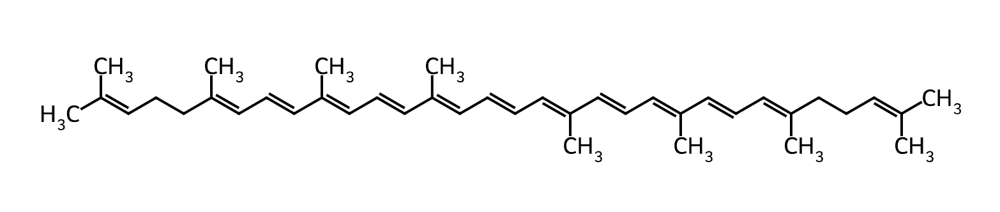
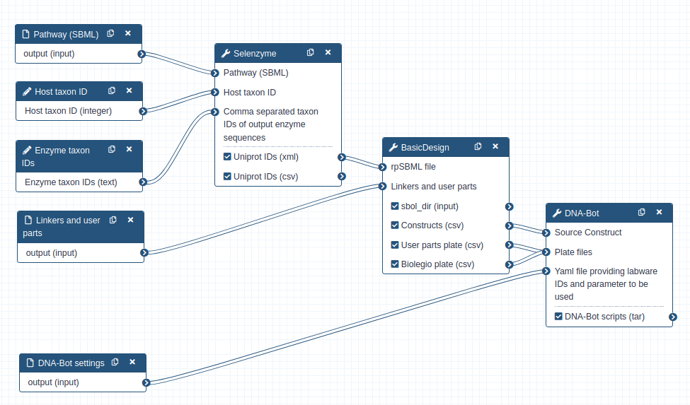
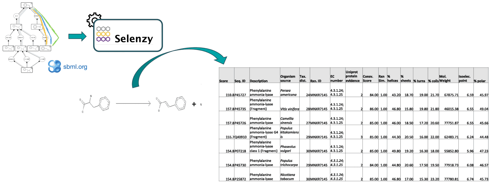
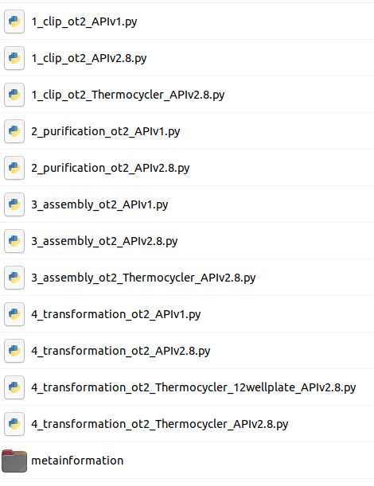
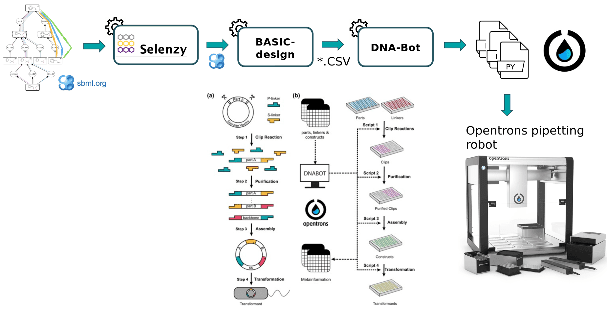

Tutorial — Genetic Design¶
Synthetic biology is a novel engineering discipline which requires computational tools for the design of metabolic pathways for the production of chemicals such as SynBioCAD portal which is the first Galaxy set of tools for synthetic biology and metabolic engineering1.
In this tutorial, we will use a set of tools from the Genetic Design - BASIC Assembly Workflow (https://galaxy-synbiocad.org which will enable you to design plasmids implementing metabolic pathways for the bioproduction of lycopene in E.coli (one of the preferred host cell for microbial biochemicals production).
Lycopene is a potent antioxidant and has been widely used in the fields of pharmaceuticals, nutraceuticals, and cosmetics. It's widely found in fruits including tomato, watermelon, guava, and papaya but the extraction method of lycopene from these natural sources is expensive, complicated and cannot match the large market demand.

Lycopene chemical structure
To address this demand, synthetic biology and metabolic engineering have been employed to develop microbial cell factories (e.g. E.coli strains) for lycopene production.
To design plasmids encoding lycopene bioproducing pathways, we will use the BASIC assembly method2 which relies on orthogonal linkers and type IIs restriction enzyme cleavage to provide a robust and accurate assembly of DNA parts into plasmid constructs. From these construct definition, the workflow will generate scripts enabling the automatic build of the plasmids as well as the transformation of strains using an Opentrons liquid handler robot. After downloading these scripts onto a computer connected to an Opentrons, one can perform the automated construction of the plasmids at the bench.
The workflow scheme we will use is shown below. First, we will run the steps of this workflow individually so as not to neglect the understanding of the intermediate steps as well. Then, we will run the workflow automatically so that it itself retrieves the outputs from the previous step and gives them as input to the next tool.

Genetic Design - BASIC Assembly Workflow
Data Preparation¶
First we need to upload and prepare the following inputs to analyze:
-
One SBML (Systems Biology Markup Language) file modeling a heterologous pathway producing lycopene such as those produced by the Pathway Analysis Workflow https://galaxy-synbiocad.org.
-
The
parts_for_lycopene.csvfile listing the parts to be used (linkers, backbone and promoters) in the constructions. -
Two YAML files providing two examples of settings, i.e. providing the identifiers of the laboratory equipment and the parameters to be used in the Opentrons scripts.
How-to: Data Preparation
-
Create a new history named
Genetic Design - Lycopene.Details: Creating a New History — Galaxy FAQ
-
Import the input files from Zenodo:
https://zenodo.org/record/6123887/files/dnabot_paris_settings.yaml https://zenodo.org/record/6123887/files/dnabot_london_settings.yaml https://zenodo.org/record/6123887/files/parts_for_lycopene.csv https://zenodo.org/record/6123887/files/rp_002_0011.xml -
Rename the datasets:
Current name New name dnabot_paris_settings.yamlDNABOT Paris Settingsdnabot_london_settings.yamlDNABOT London Settingsparts_for_lycopene.csvLycopene Partsrp_002_0011.xmlLycopene Predicted Pathway
Genetic Design Steps¶
Find enzymes using Selenzyme¶
At first, a pathway generated by the Pathway Analysis workflow (https://galaxy-synbiocad.org) is provided as input to the Selenzyme tool3. Selenzyme searches for enzymes corresponding to each reaction of the pathway. It performs a reaction similarity search in the reference reaction database MetaNetX and outputs an updated SBML file annotated with the enzyme UniProt IDs.
The tool provides several scores that can be combined in order to define an overall score. Scores are given for reaction similarity, conservation based on a multiple sequence alignment, phylogenetic distance between source organism and host, and additional scores calculated from sequence properties as shown in the example bellow.

Selenzyme concepts
Hands-on: Annotate enzymes with Uniprot IDs
Run Selenzyme (Galaxy Version 0.2.0)) with parameters:
- Select Pathway:
- Single dataset input
- Dataset
Lycopene Predicted Pathway
- In Advanced Options :
- Host taxon ID: Leave the default value
83333. This stands for using E. coli as the chassis host. - Comma separated taxon IDs of output enzyme sequences: use
553which is the taxon ID of Pantoea ananatis strain from which we want to extract enzymes. - Other options: Leave all other options at their default values.
- Host taxon ID: Leave the default value
Q1: How are identified the enzyme in the CSV file?
Q2: According to the tabulated file, how many enzymes were found for each reaction?
Hands-on: Rename outputs
Rename the outputs of Selenzyme to more meaningful names:
| Current name | New name |
|---|---|
Uniprot IDs (XML) |
Lycopene Pathway with Enzymes |
Uniprot IDs (CSV) |
Candidate Enzymes |
Generate constructs using BasicDesign¶
BasicDesign extracts enzyme IDs contained in the annotated pathway and generate genetic constructs compliant with the BASIC assembly approach. It requires as input an SBML with enzyme IDs for each reaction, and optionally one or several CSV files listing by their IDs the linkers, the promoters and the backbone used (Lycopene Parts). Example, below:
```txt
id,type,sequence,comment
L1,neutral linker,,
L2,neutral linker,,
L3,neutral linker,,
```
For linkers, the type annotation should be one of neutral linker, methylated linker, peptide fusion linker or RBS linker. For user parts, type should be one of backbone or constitutive promoter. Other type will raise a warning and will be omited.
BasicDesign converts the SBML file into CSV files describing the DNA-parts to be included into each construct (in an operon format, i.e. with only one promoter) and enumerate possible combinations of promoters, RBSs and enzymes into constructs. Depending on the numbers of enzymes per reaction, of RBSs and promoters available, and whether or not to perform CDS permutation within the operon, the number of constructs may vary.
Hands-on: Design genetic constructs
Run BasicDesign (Galaxy Version 0.3.4) with parameters:
- Select Pathway (SBML):
- Single dataset input
- Dataset
Lycopene Pathway with Enzymes
- Set Backbone part ID: leave as default
BASIC_SEVA_37_CmR-p15A.1 - Set Number of constructs: leave as default
88 - In Advanced Options :
- Select Linkers and user parts:
- Multiple datasets input
- Select
Lycopne Parts
- LMS/LMP part IDs: leave as default
LMSandLMP - Toggle Perform CDS permutation :
Yes
- Select Linkers and user parts:
Outputs
The tool will output four datasets:
- A CSV file listing all the constructs with the DNA-parts IDs to be used for. Each row corresponds to one construct, and consists of a sequence of BASIC linker and DNA part IDs.
- A CSV file listing the BASIC linkers to be used with their plate coordinates
- A CSV file listing the DNA-parts to be used with their plate coordinates
- A collection of SBOL files (one per construct) that can be visualized using online tools such as VisBOL.
Q1: How many constructs were generated?
Q2: Visualize one SBOL construct using VisBOL. What do you observe?
Hands-on: Rename outputs
Rename the outputs of BasicDesign :
| Current name | New name |
|---|---|
Constructs (CSV) |
BASIC - Constructs |
User parts plate (CSV) |
BASIC - User Parts Plate |
Biolegio plate (CSV) |
BASIC - Linkers Plate |
Constructs (Collection) |
BASIC - Constructs SBOL |
Generating pipetting robot instructions using DNA-Bot¶
DNA-Bot tool4 reads the list of constructs (previously produced by BasicDesign) and the DNA-parts position on the source plates and generates a set of python scripts to drive an Opentrons liquid handling robot for building the the plasmids. Optional parameters can be set by the user to define the plastic labwares to be used, and set protocol parameters such as washing or incubation times for purification step (DNABOT Paris Settings YAML file).
Hands-on: Generate DNA-Bot scripts
Run DNA-Bot (Galaxy Version 3.1.0) with parameters:
- Select Source Construct:
- Single dataset input
- Dataset
BASIC - Constructs(CSV )
- Select Plate files:
- Multiple datasets input
- Select these two datasets:
BASIC - User Parts PlateandBASIC - Linkers Plate(hold Ctrl or Cmd key to select multiple datasets)
- In Advanced Options :
- Lab Setting:
- Single dataset input
- Dataset
DNABOT Paris SettingsorDNABOT London Settings(YAML file)
- Leave other options at their default values.
- Lab Setting:
Outputs
This tool will output DNA-Bot scripts in tar format. You need to download it and decompress the archive. After downloading these scripts onto a computer connected to an Opentrons, one can perform the automated construction of the plasmids at the bench. Additional metadata meaningful to keep track of parameters are also outputted by the tool.

Q1: Looking at the scripts names, can you figure out the 4 main steps of DNA-Bot?
Q2: What is the format of the scripts?
Conclusion¶
In this tutorial, we have designed plasmids for the production of lycopene in E.coli using the BASIC assembly method. We have used three tools from the Galaxy-SynBioCAD portal: Selenzyme to identify enzymes for each reaction of the pathway, BasicDesign to generate genetic constructs compliant with the BASIC assembly method, and DNA-Bot to generate scripts for an Opentrons liquid handling robot to automate the plasmid construction.
From there one can follow the DNA-Bot protocol to perform the automated construction of the plasmids at the bench.

Content of the TAR file generated by DNA-Bot
References¶
-
Hérisson, J.; Duigou, T.; Du Lac, M.; Bazi-Kabbaj, K.; Sabeti Azad, M.; Buldum, G.; Telle, O.; El Moubayed, Y.; Carbonell, P.; Swainston, N.; Zulkower, V.; Kushwaha, M.; Baldwin, G. S.; Faulon, J.-L. The Automated Galaxy-SynBioCAD Pipeline for Synthetic Biology Design and Engineering. Nature Communications 2022, 13 (1), 5082. https://doi.org/10.1038/s41467-022-32661-x. ↩
-
Storch, M.; Casini, A.; Mackrow, B.; Fleming, T.; Trewhitt, H.; Ellis, T.; Baldwin, G. S. BASIC: A New Biopart Assembly Standard for Idempotent Cloning Provides Accurate, Single-Tier DNA Assembly for Synthetic Biology. ACS Synthetic Biology 2015, 4 (7), 781--787. https://doi.org/10.1021/sb500356d. ↩
-
Carbonell, P.; Wong, J.; Swainston, N.; Takano, E.; Turner, N. J.; Scrutton, N. S.; Kell, D. B.; Breitling, R.; Faulon, J.-L. Selenzyme: Enzyme Selection Tool for Pathway Design. Bioinformatics (Oxford, England) 2018, 34 (12), 2153--2154. https://doi.org/10.1093/bioinformatics/bty065. ↩
-
Storch, M.; Haines, M. C.; Baldwin, G. S. DNA-BOT: A Low-Cost, Automated DNA Assembly Platform for Synthetic Biology. Synthetic Biology 2020, 5 (1), ysaa010. https://doi.org/10.1093/synbio/ysaa010. ↩